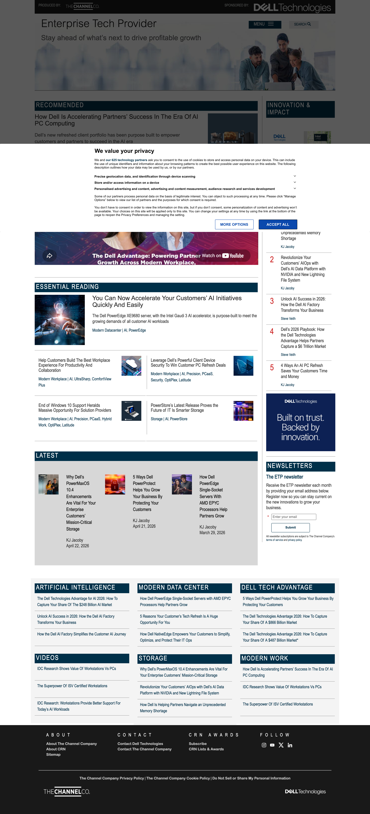
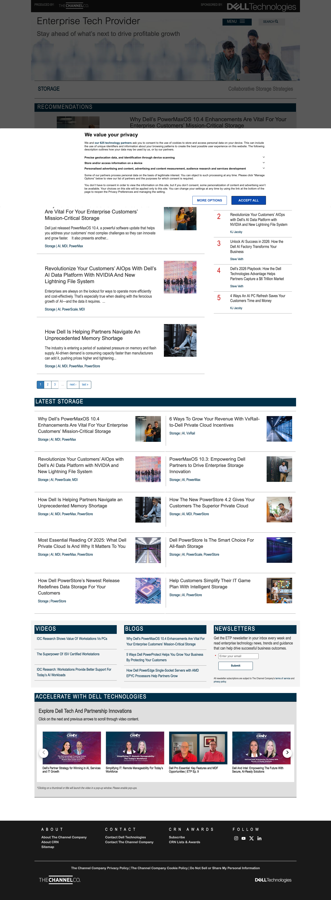
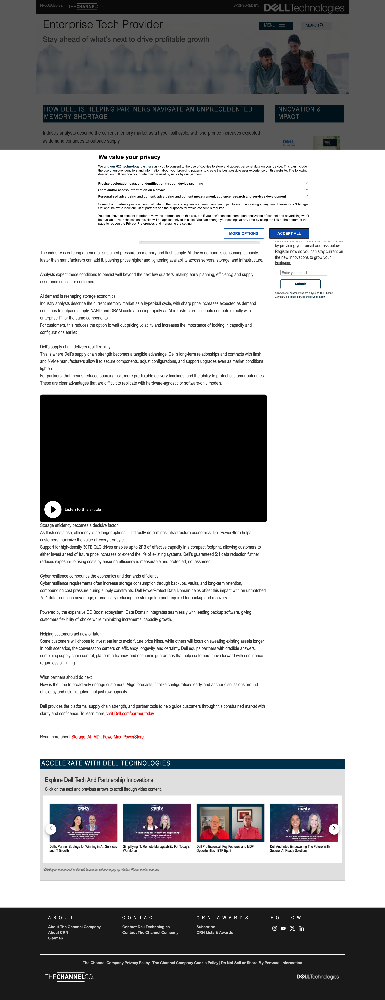
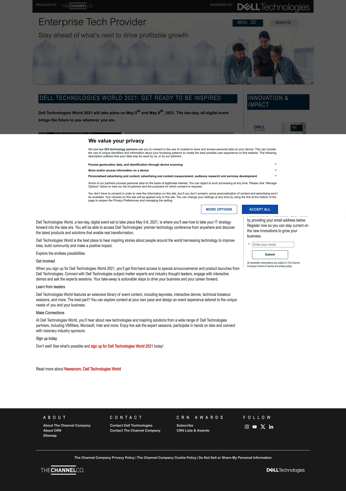
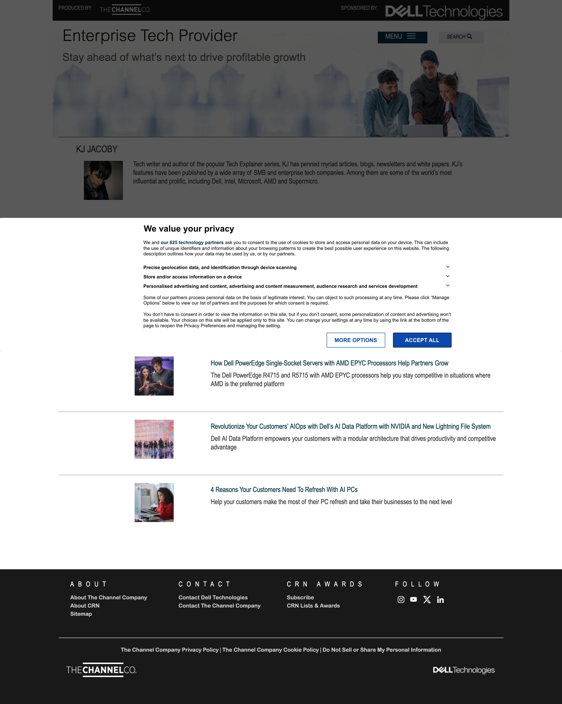

Coverage cross-page
medium · 0 fallbacks
Discovery method: sitemap.xml (614 article URLs) plus link-extraction from the home page to find category and listing templates not in the sitemap.
Five pages cover the four observed templates: home, category listing, article (storage + newsroom), and author profile.
Three nav-linked utility paths return errors: /videos (404), /newsletter-archive (404), /sitemap (403).
Pages cross-page





Palette cross-page
Two-color brand: dark teal #003049 (Dell-adjacent) on white, extended by neutrals.
No saturated palette beyond primary; the link blue and accent red are inline-content only and never appear as buttons or surfaces.
Typography cross-page No modular scale
Single family system: Roboto + Roboto Condensed at four weights. Sizes do not follow a modular ratio (14 → 16 → 18 → 24 → 25 → 27.5 → 41 — no consistent step). The semantic article H1 is 25px while a decorative section label H2 elsewhere on the same page reaches 41px.
Voice observed
CTA frequency (top across 5 pages)
Repeated headings (≥3 pages)
- Enterprise Tech Provider — H1 on every page (5/5)
- Stay ahead of what’s next to drive profitable growth — H2 on every page (5/5)
- NEWSLETTERS — H2 on 4/5 pages
- INNOVATION & IMPACT — H2 on 3/5 pages
- Why Dell’s PowerMaxOS 10.4 Enhancements … — same article promoted on 3/5 pages
- Intel vPro® Fleet Services … — same item promoted on 3/5 pages
Reproduction · the persistent hero band
ENTERPRISE TECH PROVIDER
Stay ahead of what’s next to drive profitable growth
↑ Renders ~190 px tall on every page (home, listing, article, author profile) before the page’s actual title appears.
Tensions decision agenda for direct
Type scale is ad-hoc
Sizes 14 → 16 → 18 → 24 → 25 → 27.5 → 41 do not follow a modular ratio. Article H1 is 25px while decorative section H2s elsewhere reach 41px — semantic hierarchy reads upside-down.
_brand-extraction.json § type.scaleAuditSite ships zero design tokens
Only --sa-uid (analytics user id) is defined at :root. No color / spacing / type tokens — every value is hard-coded in legacy Drupal CSS. The migration target will introduce tokens, which is a structural change worth surfacing now.
pages/*.json § cssCustomPropertiesSingle logo variant captured
Only the white wordmark on dark teal etp-logo-2025.png is in use. No SVG, no monochrome, no inverted variant. The redesign will need a variant set for use against light backgrounds and at small sizes.
_brand-extraction.json § logoThe site name is the H1 of every page
On the home page H1 = "Enterprise Tech Provider" (the site name); the article's actual title is rendered as H2 inside a teal band. Article pages instead promote the article title to H1 but at 25px — visually outranked by an unrelated decorative H2 at 41px on the same page. SEO + accessibility + visual hierarchy all read inconsistently.
pages/*.json § headings (H1s captured)~190px hero band repeats on every page including utility pages
The "Enterprise Tech Provider · Stay ahead …" band with stock photo is delivered above-the-fold on the author profile, on category listings, and on every article — costing ~190px before the page's own H1 appears. The brand is asserted via repetition rather than via design intent.
_brand-extraction.json § systemComponents.hero-bandHome page stacks 13+ section labels
RECOMMENDED · ESSENTIAL READING · LATEST · POPULAR · NEWSLETTERS · ARTIFICIAL INTELLIGENCE · VIDEOS · MODERN DATA CENTER · STORAGE · DELL TECH ADVANTAGE · MODERN WORK · INNOVATION & IMPACT · REEL HIGHLIGHTS — each rendered as a full-width dark teal strip. Editorial intent dissolves; nothing reads as the most important thing on the page.
pages/home.json § headingsHeavy ALL-CAPS flattens scannability
33% of headings (29 of 88) are fully UPPERCASE — including article H1s on storage and newsroom templates. Combined with high-density grids, this removes the natural shape-recognition cue readers use to skim.
pages/*.json § headingsCards carry only a title — no date, author, or topic chip
Every listing card shows a 309×309 thumbnail (rendered 78–195px) and 1–3 lines of headline. There is no publication date, no byline, no read-time, and no topic chip. With 614 articles in the sitemap, the user cannot tell what is current, who wrote it, or what category it belongs to without clicking.
pages/category-storage.json § components + media.imagesCard thumbnails 4× oversized
Source images are 309×309 px but rendered at 78–195 px, with no responsive srcset — wasting bandwidth and making cards feel weighty. On a category listing with 30+ tiles this is the dominant page weight.
pages/*.json § media.images (naturalWidth vs. rendered rect)Three nav-linked surfaces return errors
/videos (404, linked from home VIDEOS section) · /newsletter-archive (404, linked from main nav) · /sitemap (403, linked from footer). Each is a promise the navigation makes and the site doesn't keep.
_crawl-log.json § discovery.ia_observations.broken_nav_linksTwo co-brand strips compete with the page identity
The header carries "PRODUCED BY THE CHANNEL COMPANY" + "SPONSORED BY DELL TECHNOLOGIES" co-brands. The footer repeats them. Neither establishes a clear primary brand for the site itself — the destination ("Enterprise Tech Provider") feels intermediated rather than direct.
_brand-extraction.json § logo.coBrand + footerCoBrandSourcepoint consent dialog dominates first impression
A 1440×900 cross-origin iframe (cdn.privacy-mgmt.com) covers the entire viewport on first visit and remains until dismissed. Because the consent UI is unstyled by the host, the brand impression on first-visit users is generic Sourcepoint rather than ETP.
pages/*.json § media.iframes + embedDominance25% of images carry empty alt text
28 of 111 captured images have no alt text. Below the 30% trigger threshold for the mechanical detector, but worth flagging given that thumbnails on listing pages — which carry the article title's only visual cue — are among the empties.
pages/*.json § media.images[].altTwo parallel taxonomies for the same topics
Storage articles can be reached via /storage (working index), /category/storage (working alternative index), and /storage/<slug> (article path). Other topics live in URL space (/artificial-intelligence/<slug>) but the section index /artificial-intelligence 404s — only /category/ai works. The IA promises symmetry it doesn't deliver.
_crawl-log.json § discovery.ia_observationsBuilt on Bootstrap 3 + Drupal legacy theme
Bootstrap 3.3.7 (released 2015, EOL 2019) is loaded from a public CDN. The theme path is /sites/all/themes/tpz_theme_2020 (Drupal 7 convention). The visual chrome — flat grids, sharp corners, no shadow language — is shaped by the framework era as much as by deliberate brand choices.
Motifs cross-page
Components observed
- Card gridlisting template, all 5 pages — 309×309 thumbs, no metadata
- Section-label strip5–13× on home — full-width #003049 + uppercase H2
- Right-rail ad slot300×250 GIF/JPEG, home + listing + article
- Newsletter form (3-field)all 5 pages — embedded TheChannelCo iframe
- Carousel (lightSlider)5 instances on home — REEL HIGHLIGHTS, recommended, etc.
- Article-title band3 article templates — uppercase white H1 on #003049
- Hero band (persistent)all 5 pages — site H1 + tagline + stock photo
- Co-branded headerall 5 pages — publisher + sponsor + MENU/SEARCH
- Co-branded footerall 5 pages — 4-col + social row + legal
- Consent overlayall 5 pages on first visit — Sourcepoint iframe (1440×900)
System parts cross-page
Dark teal band carrying co-brand markers (PRODUCED BY THE CHANNEL COMPANY · SPONSORED BY DELL TECHNOLOGIES), search bar, and MENU button. ~70px tall.
H1 "Enterprise Tech Provider" + H2 "Stay ahead of what’s next to drive profitable growth" + lifestyle stock photo of three people at a workstation. Repeats above the fold on every page including the author profile.
Full-width #003049 strip with uppercase H1 in white, optional thumbnail at right. The page's actual title — beneath the global hero.
300×250 ad slot above a 3-field newsletter signup form embedded from pages.thechannelco.com.
Black band, 4 columns (ABOUT · CONTACT · CRN AWARDS · FOLLOW), social icons row, legal strip, and a TheChannelCo + Dell Technologies co-brand row at the bottom.
Iframe ecosystem observed
- cdn.privacy-mgmt.com — Sourcepoint consent overlay, 1440×900 (full viewport on first visit)
- youtube.com/embed/videoseries — REEL HIGHLIGHTS playlist embed, 870×315
- pages.thechannelco.com/index.php/form/XDFrame — newsletter signup form, lazy-loaded
- tcc.demdex.net — Adobe Audience Manager, 0×0 (offscreen tracking)
Logo
- Source
- Site uses three logo assets: the white "Enterprise Tech Provider" wordmark PNG, the "Produced by The Channel Company" mark, and the white "Sponsored by Dell Technologies" mark. Captured here: the Dell sponsor mark.
- File
- PNG, 160 px wide
- Variants captured
- White-on-dark only.
- Variants not captured
- SVG, mono / inverted, ETP master wordmark on light surfaces.